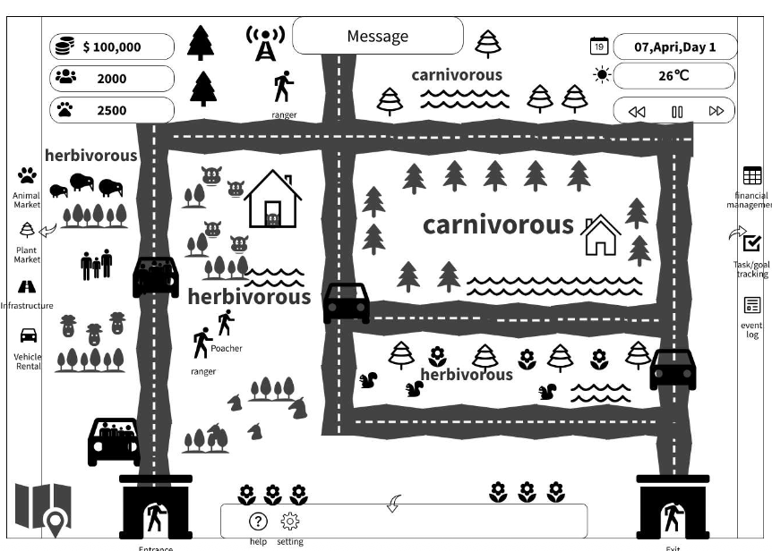
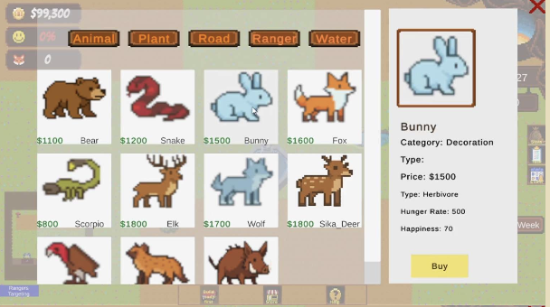

Debug Divas · Faculty Hall of Fame Nominee · Grade: Excellent
Build a park.
Balance an ecosystem.
A 2D top-down simulation where players manage ecological welfare, tourist infrastructure, and economic stability. I led the 3-person team (Debug Divas) as Product Manager and engineered the core simulation systems.
01 / The Core System
Nature drives profit.
Profit sustains nature.
Instead of endless hoarding, Safari connects ecology and economy into an interdependent balance cycle.
Healthy animal species
High sighting satisfaction
Ticket fees & bounties
Habitat & Ranger upkeep
02 / Product Thinking into UX
Streamlining control:
The Centralized Store.
Early wireframes had fragmented sub-markets that caused severe cognitive overload. I redesigned the interface into a split-panel unified Store hub for split-second decisions during park emergencies.


03 / Engineering & Leadership
Engineers
My Dual RoleProduct Manager
Technical Lead
Agile Scrum sprints, backlog grooming, UML system design, and balancing economic variables.
Implemented goal-oriented AI: animals autonomously seek food and water based on real-time Hunger/Thirst states.
Tilemap modular road networks, Day-Night visibility mechanics, and JSON game-state persistence.